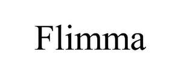

Trade Mark Journal No.2025/045 7 November 2025
UK00004284737 28 October 2025 (7,11,35)

- Class 7
- Apparatus for aerating water; Dishwashers; Beverage preparation machines, electromechanical; Blenders, electric, for household purposes; Juice extractors, electric; Coffee extracting machines; Electric food blenders; Electric ice crushing machines; Power-operated coffee grinders; Soda-pop making machines; Ironing presses; Laundry presses; Dry-cleaning machines; Electric washing machines; Household cleaning and laundry robots with artificial intelligence; Laundry washing machines incorporating a drying tumbler; Steam cleaning machines; Washing machines for household purposes.
- Class 11
- Freezers; Beverage cooling apparatus; Ice machines and apparatus; Coffee machines, electric; Deep fryers, electric; Refrigerators; Refrigerating display cabinets; Air fryers; Soya milk making machines, electric; Domestic deep fryers [electric]; Domestic ovens; Electric refrigerators [for household purposes]; Electric skillets; Electromagnetic induction cookers [for household purposes]; Microwave ovens for domestic use; Oil-free electric fryers; Clothes dryers; Electric clothes dryers [heat drying]; Electric laundry dryers for household purposes; Ice machines; Electrical rice cookers.
- Class 35
- Online advertising on a computer network; Commercial administration of the licensing of the goods and services of others; Web site traffic optimisation; Provision of an online marketplace for buyers and sellers of goods and services; Consultancy services in the field of affiliate marketing; Marketing consulting; Display services for merchandise; Advertisement and publicity services by television, radio, mail; Advertising and marketing services provided by means of social media; Business marketing services; Influencer marketing; On-line advertising and marketing services; Promotion of goods through influencers; Retail services in relation to domestic electrical equipment; Wholesale services in relation to domestic electrical equipment; Sales management services; Provision of an on-line marketplace for buyers and sellers of goods and services.
Shenzhen Flimma Innovation Technology Co., Ltd.
Representative: ENGVAT LIMITED